Crearea de rapoarte automate în Excel
Un ghid practic pentru conectarea la date, pregătirea listelor de filtrare și construirea rapoartelor care se actualizează ușor.
Dacă avem de întocmit periodic rapoarte cu aspect constant, care folosesc aceleași funcții, dar informațiile trebuie actualizate de fiecare dată, în Excel putem folosi instrumentul Power Query.
Întocmirea unui raport trece prin următoarele etape:
- Stabilirea informațiilor care trebuie să apară în raport și a formei de prezentare tabelară sau grafică.
- Stabilirea sursei datelor: fișier text (CSV, TSV, JSON) sau Excel.
- Conectarea la sursa de date cu Power Query.
- Prelucrarea datelor cu formule, filtre sau pivotarea tabelelor.
- Formatarea aspectului.
- Reîmprospătarea ușoară a datelor.
Stabilirea sursei datelor
Pentru exemplificare am ales setul de date Air passenger transport routes between partner airports and main airports in Romania (avia_par_ro), care conține numărul de călători expediați de pe sau sosiți pe aeroporturile din România. Pentru acest exercițiu am prelucrat datele într-o formă mai simplă:
Data columns (total 13 columns):
# Column Non-Null Count Dtype
--- ------ -------------- -----
0 freq 60562 non-null str
1 unit 60562 non-null str
2 tra_meas 60562 non-null str
3 CountryCodeOrigin 60562 non-null str
4 CountryOrigin 60562 non-null str
5 AirportCodeOrigin 60562 non-null str
6 AirportOrigin 60562 non-null str
7 CountryCodeDestination 60562 non-null str
8 CountryDestination 60562 non-null str
9 AirportCodeDestination 60562 non-null str
10 AirportDestination 60562 non-null str
11 TIME_PERIOD 60562 non-null str
12 Passengers 60562 non-null int64
dtypes: int64(1), str(12)Fișierul de date pe care îl vom importa în Excel este Estat_avia_par_ro_monthly_lt_2023.csv.
Legătura cu fișierul CSV
Creăm un folder Laborator_07, în care vom lucra. Descărcăm fișierul Estat_avia_par_ro_monthly_lt_2023.csv și creăm un fișier Excel cu numele AirPassengersRomania.xlsx.
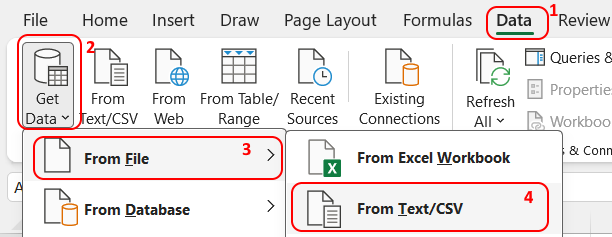
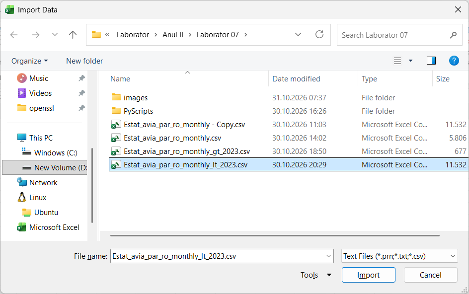
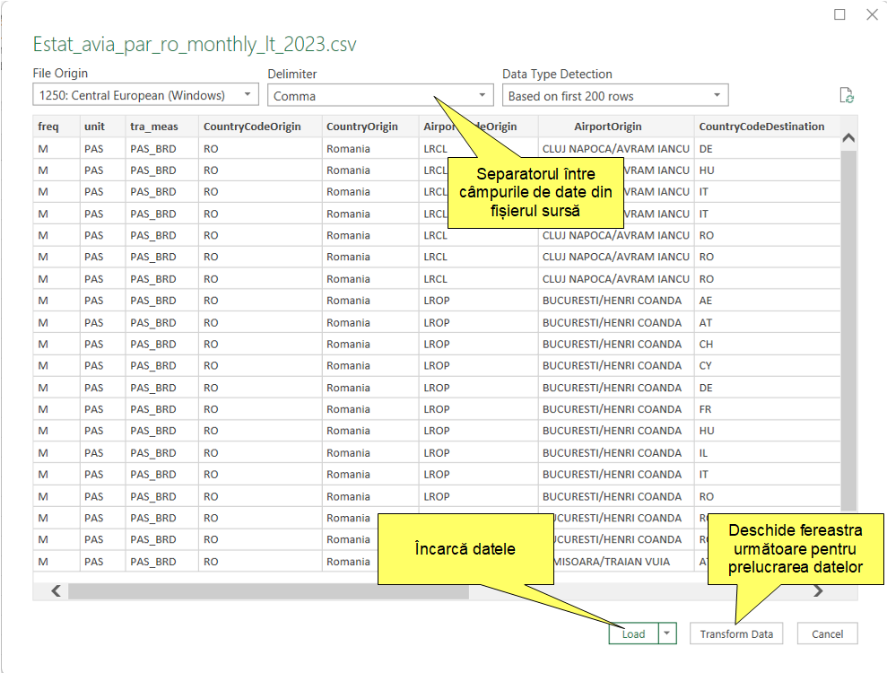
Prelucrarea datelor cu Power Query Editor
Pentru a prelucra datele (schimbarea tipului datelor, filtrare, concatenare sau împărțire coloane) apăsăm butonul Transform Data. Se deschide fereastra Power Query Editor, un instrument pentru extragerea, transformarea și încărcarea datelor (ETL).
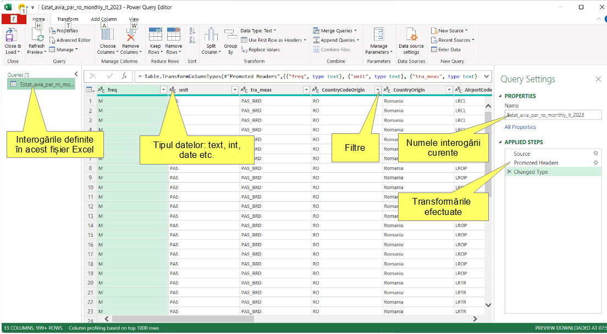
După transformarea datelor închidem interogarea din Close & Load → Close & Load To…. Se deschide fereastra de import:
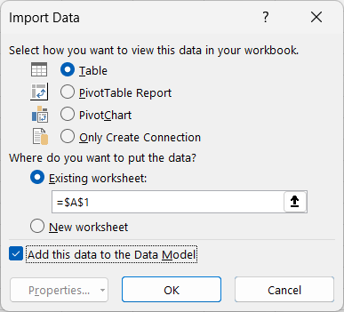
Alegem să importăm datele într-un tabel, în foaia de lucru existentă. Datele importate într-un tabel pot fi accesate direct, fără adresarea lor prin rânduri și coloane. Un tabel Excel permite accesul la coloane prin referințe structurate de tipul NumeTabel[NumeColoană].
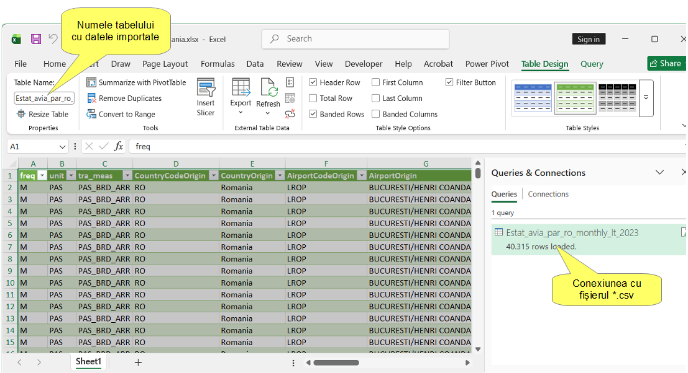
Redenumim tabelul de date în PassengersTable și foaia de lucru curentă în TableDataSheet.
Coloanele auxiliare
În foaia de lucru TableDataSheet adăugăm două coloane ajutătoare: Month, în coloana N, și Year, în coloana O, pentru a extrage luna și anul din data din coloana TIME_PERIOD.
| Adresă | Formulă |
|---|---|
| N2 | |
| O2 | |
Coloanele Month și Year devin componente ale tabelului PassengersTable.
Listele auxiliare
Adăugăm o foaie de lucru numită HelperSheet, în care vom crea liste intermediare ce vor fi de ajutor la selecția parametrilor de filtrare în raportul final:
- Scriem etichetele pentru liste în celulele B3, C3, D3 și E3:
AirportOrigin,Countries,AirportDestination,Year. - În celulele B4, C4, D4 și E4 scriem formulele care vor genera listele:
| Adresă | Formulă |
|---|---|
| B4 | |
| C4 | |
| D4 | |
| E4 | |
Foaia de lucru pentru raport
Filtrele raportului dinamic
Adăugăm foaia de lucru Report și scriem etichetele listelor de filtrare:
| Adresă | Text |
|---|---|
| B4 | AirportOrigin: |
| B5 | Countries: |
| B6 | AirportDestination: |
| B7 | Year: |
La adresele C4, C5, C6 și C7 adăugăm listele de filtrare:
- Selectăm C4, alegem Data Validation, apoi Allow: List și Source: =HelperSheet!$B$4#.
- Pentru C5, sursa listei este
=HelperSheet!$C$4#. - Pentru C6, sursa listei este
=HelperSheet!$D$4#. - Pentru C7, sursa listei este
=HelperSheet!$E$4#.
Tabelul raportului cu formula de filtrare
Scriem titlurile coloanelor din raport (copiate din TableDataSheet) în celulele B9–P9:
freq, unit, tra_meas, CountryCodeOrigin, CountryOrigin, AirportCodeOrigin, AirportOrigin, CountryCodeDestination, CountryDestination, AirportCodeDestination, AirportDestination, TIME_PERIOD, Passengers, Month, Year
Adăugăm formula de filtrare a datelor din PassengersTable, cu parametrii aleși în listele construite cu Data Validation:
| Adresă | Formulă |
|---|---|
| B10 | |
Liste de filtrare „în cascadă”
Comportamentul listelor Data Validation din foaia Report poate fi îmbunătățit: în Countries afișăm numai țările către care au avut loc zboruri, în AirportDestination numai aeroporturile din țara aleasă anterior, iar în lista Year numai anii în care au avut loc zboruri pentru parametrii selectați anterior (cascading dropdown). Modificăm formulele din listele de pe foaia HelperSheet:
| Adresă | Formulă |
|---|---|
| B4 | |
| C4 | |
| D4 | |
| E4 | |
Formatarea paginii raportului
- Ascundem coloanele care nu sunt necesare.
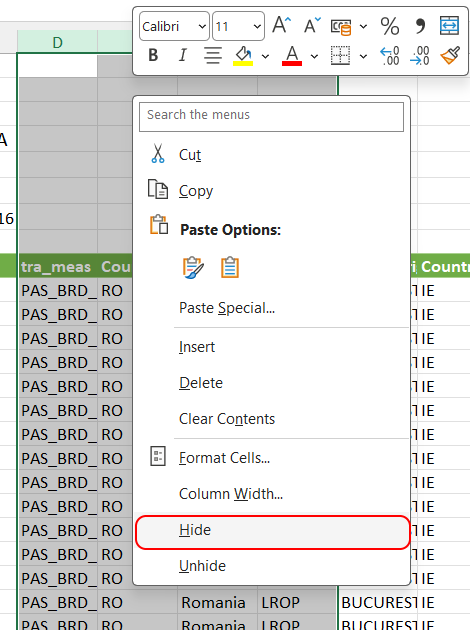
- Stabilim formatul paginii.
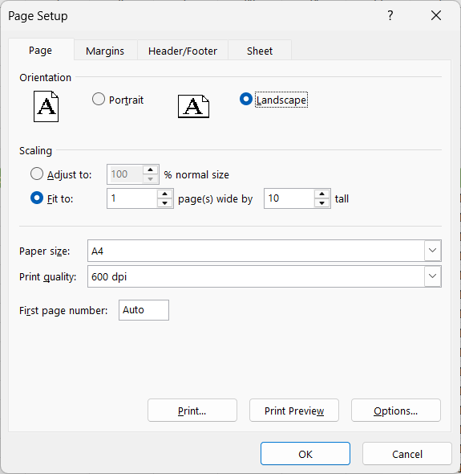
- Adăugăm numărul de pagină la subsolul paginii.
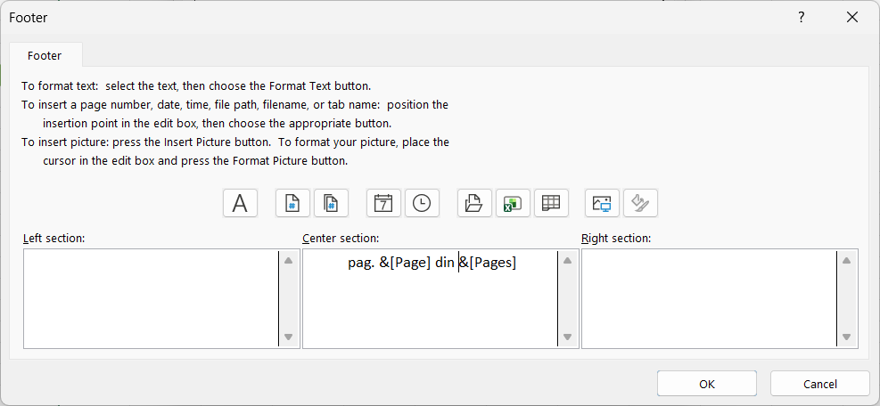
- Formatăm celulele cu borduri.
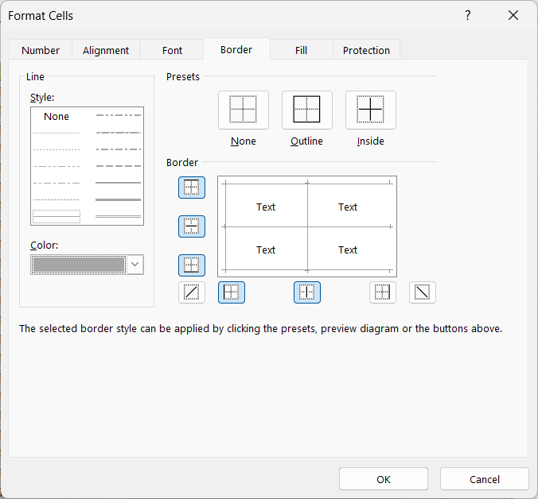
La tipărire, raportul arată astfel:
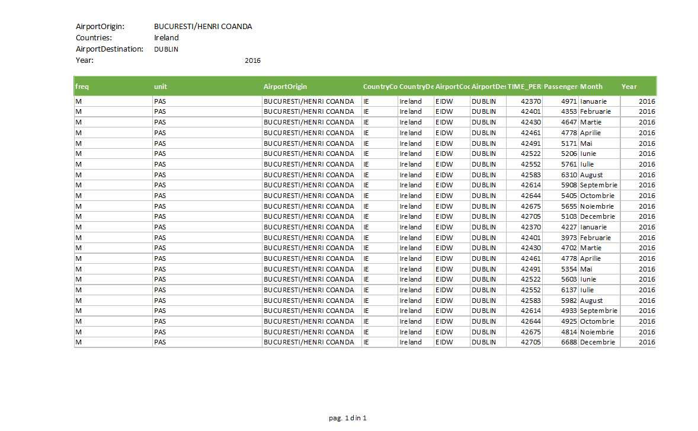
Împrospătarea datelor
Unul dintre avantajele folosirii Power Query este că, dacă se modifică datele din fișierul CSV, putem împrospăta raportul cu un clic pe butonul Refresh din fila Data.
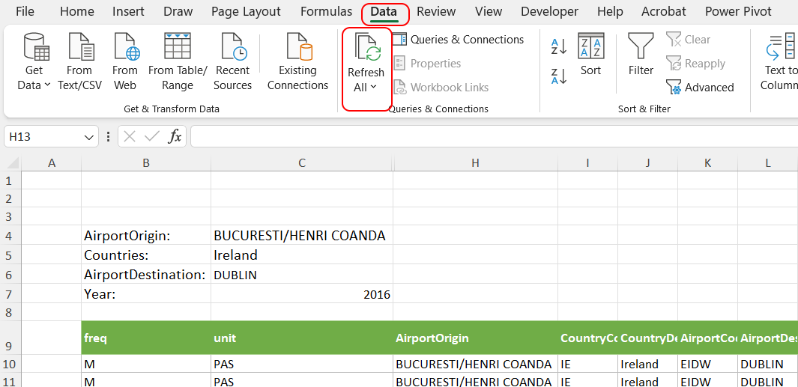
Rapoarte cu Pivot Table
Pivotarea unui tabel transformă valorile distincte dintr-una sau mai multe coloane din tabelul sursă în coloane sau rânduri în tabelul pivotat. La intersecția acestora se găsesc valori agregate (sum, count etc.), calculate din alte coloane ale tabelului sursă.
Report, din fila Insert alegem PivotTable → From Table/Range.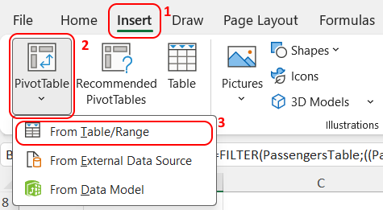
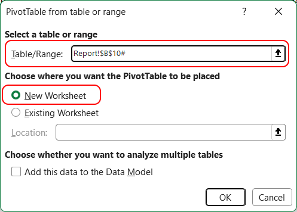
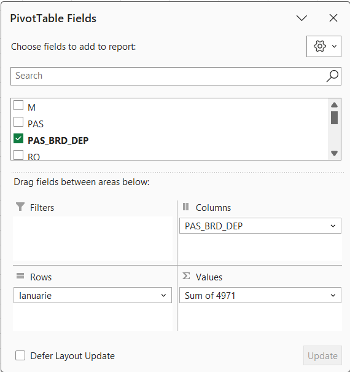
Redenumim noua foaie de lucru în Summary.
Completăm următoarele formule:
| Adresă | Formulă |
|---|---|
| A1 | |
| A2 | |
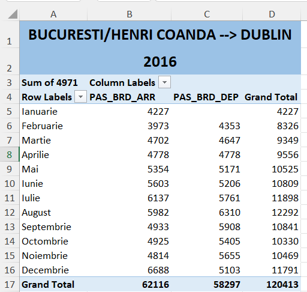